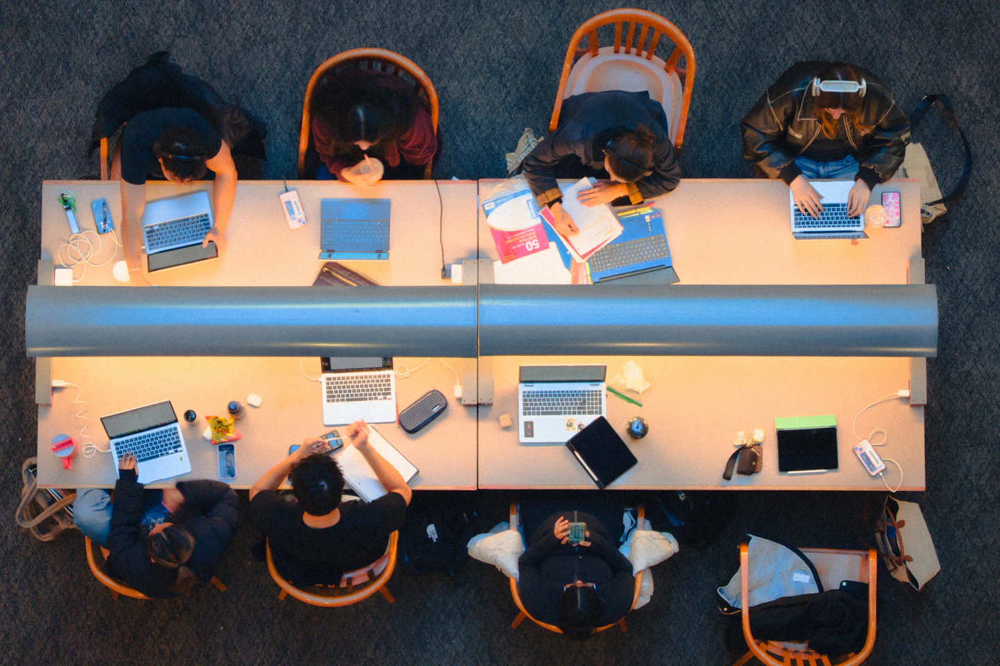
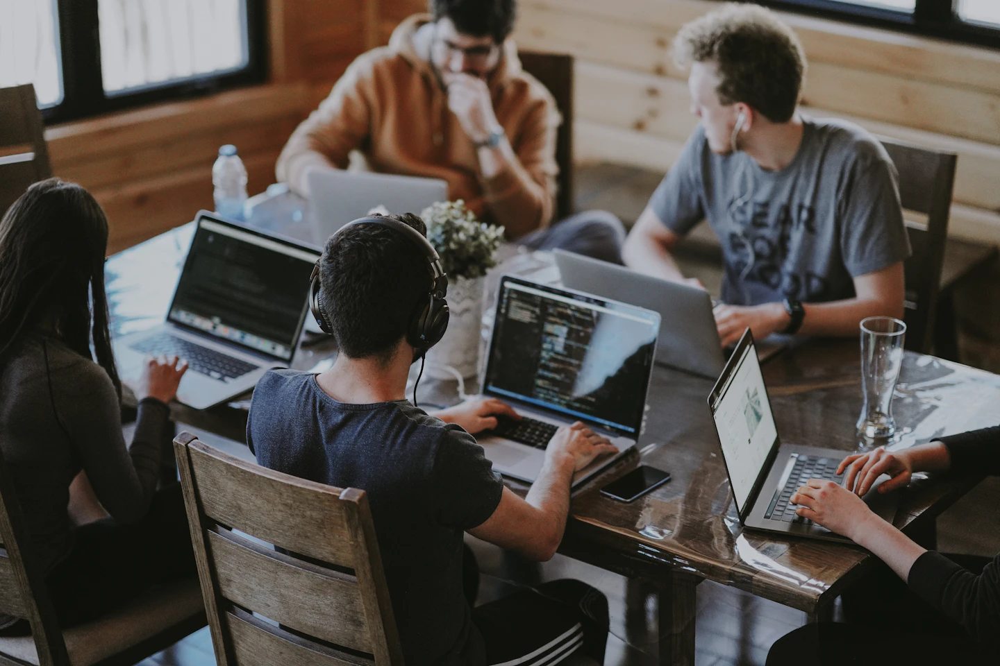
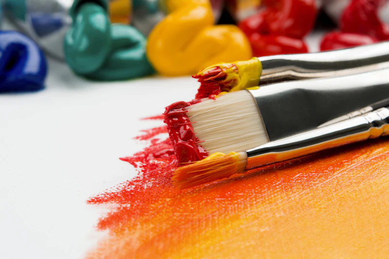
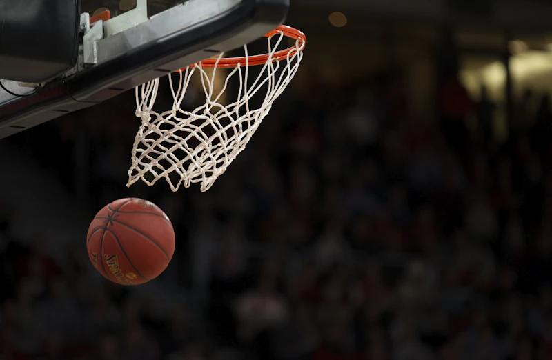

Sains dan
teknologi
Mengamati kualitas air, menyusun percobaan sederhana, atau membuat prototipe digital. Siswa diajak mencatat bukti dan menjelaskan alasan di balik kesimpulannya.
Contoh proyek Jurnal pengamatan lingkungan sekitar.
Ruang untuk rasa ingin tahu.
Tempat untuk tumbuh bersama.
SELAMAT DATANG DI NUSA CENDEKIA
Konsep sekolah yang memberi ruang untuk bertanya, menguji ide lewat proyek, dan belajar bersama teman.
Kenali program belajar Informasi pendaftaran
Mulai dari satu pertanyaan.
Temukan banyak kemungkinan.
SMA Nusa Cendekia adalah sekolah fiktif yang membayangkan pembelajaran dekat dengan kehidupan. Dalam konsep ini, siswa mengamati persoalan, mencari sumber, mencoba solusi, lalu menceritakan apa yang dipelajari.
Profil, pendekatan, dan fasilitas di halaman ini merupakan konten konsep untuk demo portofolio.
Landasan pengetahuan, ruang bereksplorasi,
dan kebiasaan merefleksikan proses.
Program contoh untuk demo portofolio.
Mengamati kualitas air, menyusun percobaan sederhana, atau membuat prototipe digital. Siswa diajak mencatat bukti dan menjelaskan alasan di balik kesimpulannya.
Contoh proyek Jurnal pengamatan lingkungan sekitar.
Membandingkan sumber bacaan, menyusun cerita, dan berlatih menyampaikan pendapat. Diskusi memberi ruang untuk memahami sudut pandang yang berbeda.
Contoh proyek Wawancara dan majalah kelas.
Mengeksplorasi karya visual, berlatih gerak dan sportivitas, serta mengenali kebiasaan diri. Hasil karya dibahas bersama, dengan perhatian pada prosesnya.
Contoh proyek Pameran karya dan permainan tim.
Gambaran kegiatan dalam konsep sekolah.
Seluruh foto adalah ilustrasi stok,
bukan kegiatan SMA Nusa Cendekia.

Contoh kegiatan: membandingkan ide dan membagi peran dalam proyek.
Contoh kegiatan: mengamati perubahan dan mencatat hasil percobaan.

Contoh kegiatan: mencoba warna, menyusun karya, dan berbagi cerita.

Contoh kegiatan: melatih koordinasi, kerja sama, dan sportivitas.
Luangkan waktu untuk memahami program dan membicarakan kebutuhan belajar bersama keluarga.
Lihat informasi kontakBaca pendekatan dan contoh kegiatan belajar. Catat hal yang ingin diketahui lebih lanjut.
Pada sekolah nyata, tanyakan jadwal kunjungan, persyaratan, dan rincian biaya kepada petugas resmi.
Ikuti tahapan yang ditetapkan instansi nyata setelah mendapat informasi yang terkonfirmasi.
Catatan demo Pendaftaran tidak dibuka melalui website ini. Jadwal, syarat, biaya, dan kontak belum tersedia sebagai informasi nyata; semuanya perlu dikonfirmasi ke instansi yang bersangkutan.
Demo ini menampilkan contoh bidang sains dan teknologi, bahasa dan komunikasi, serta seni, olahraga, dan pengembangan diri. Ini bukan pernyataan kurikulum sekolah nyata.
Alur konsep dimulai dengan mengenali program, menghubungi sekolah, dan mengikuti proses seleksi. Website ini tidak menerima pendaftaran atau dokumen siswa.
Tidak. Tidak ada jadwal atau biaya resmi pada demo ini. Informasi tersebut harus diperoleh langsung dari instansi nyata yang Anda tuju.
Bagian kontak memperlihatkan tempat informasi layanan sekolah. Alamat, telepon, email, dan jam layanan masih berupa placeholder. Formulir hanya untuk mencoba interaksi; pesan tidak dikirim.
Informasi berikut adalah placeholder.
Belum dapat digunakan untuk menghubungi sekolah.